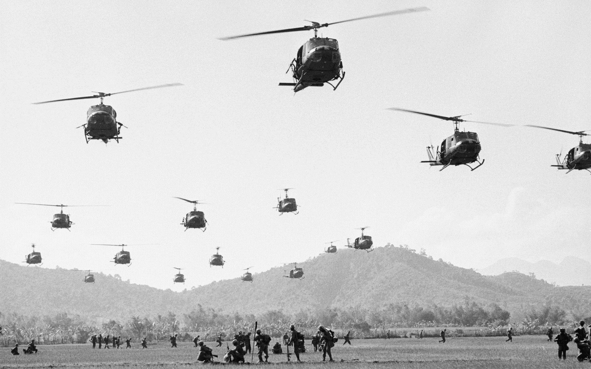

AK
AK-47
Fusil de asalto estándar. Para mediados de los 60, la mayoría de las tropas principales del Vietcong usaban versiones chinas del AK-47 soviético.
El conflicto que dividió a una nación y cambió al mundo. Una guerra televisada que el mundo no pudo ignorar.

Cinco palabras guían toda la historia. Memorízalas y las secciones se ordenan solas.
“Dividieron, escalaron, sangraron, firmaron, cayeron.”
Vietnam fue colonia francesa hasta 1954. La derrota en Dien Bien Phu abrió la puerta a los Acuerdos de Ginebra y a la división en el paralelo 17.
Ho Chi Minh proclama la independencia en 1945. Francia intenta recuperar su colonia. En 1954, tras la derrota en Dien Bien Phu, los Acuerdos de Ginebra dividen Vietnam en el paralelo 17.
El Norte queda bajo un gobierno comunista liderado por Ho Chi Minh. El Sur, bajo Ngo Dinh Diem, con apoyo de Estados Unidos. Las elecciones de reunificación de 1956 nunca se celebran.
“La independencia dividió al país en dos.”1964: un incidente en el mar desata la escalada. 1965: medio millón de soldados estadounidenses llegan a Vietnam del Sur.
En agosto de 1964, EE.UU. alega un ataque norvietnamita contra su destructor USS Maddox en el Golfo de Tonkín. El Congreso aprueba la Resolución que otorga poder total al presidente Johnson.
En 1965 llegan las primeras tropas de combate. Para 1968, EE.UU. tiene más de 500.000 soldados en Vietnam.
“Un incidente en el mar desató una guerra en la selva.”Enero de 1968. El Vietcong ataca más de 100 ciudades. Militarmente pierde. Mediáticamente, gana la guerra.
Ganaron en los campos de batalla, pero perdieron en los televisores.
Punto de inflexión del conflictoLa Ofensiva del Tet fue un ataque coordinado del Vietcong y Vietnam del Norte contra más de 100 ciudades survietnamitas. Aunque militarmente fracasó, demostró al público estadounidense que la guerra no estaba cerca de terminar.
Las imágenes televisadas de la ejecución de un prisionero del Vietcong en plena calle de Saigón (foto de Eddie Adams, Pulitzer 1969) dieron la vuelta al mundo.
La Ofensiva del Tet marcó el inicio del declive definitivo del apoyo público a la guerra en Estados Unidos.
Detrás de cada cifra hay una familia destruida. Detrás de cada foto, una vida que no volvió.
La foto “Napalm Girl” de Nick Ut (Pulitzer 1973) se convirtió en el símbolo del horror de la guerra y reforzó el movimiento pacifista en todo el mundo.
1969: Nixon inicia la vietnamización. 1973: Acuerdos de París. Fue una tregua, no una paz.
En 1969, Nixon lanza la vietnamización: retirada gradual de tropas, cediendo la responsabilidad al ejército survietnamita.
En 1973 se firman los Acuerdos de París: alto el fuego, retirada total de EE.UU. y devolución de prisioneros. El acuerdo fue una tregua temporal, no una paz real.
“Se firmó la paz, pero la guerra continuó.”| Año | Evento clave | Consecuencia |
|---|---|---|
| 1969 | Vietnamización | Retirada gradual de tropas estadounidenses |
| 1972 | Operación Linebacker II | Bombardeos masivos sobre Vietnam del Norte |
| 1973 | Acuerdos de París | Retirada total de EE.UU. y devolución de prisioneros |
| 1975 | Caída de Saigón | Fin de la guerra |
30 de abril de 1975. Los tanques norvietnamitas atraviesan el Palacio Presidencial. Fin de casi 30 años de conflicto.
El 30 de abril de 1975, la guerra terminó para siempre.
Reunificación de Vietnam · 1976Saigón fue rebautizada como Ciudad Ho Chi Minh en 1976, en honor al líder revolucionario fallecido en 1969.
No necesitaban la mejor tecnología. Necesitaban la más letal en la selva.
Fusil de asalto estándar. Para mediados de los 60, la mayoría de las tropas principales del Vietcong usaban versiones chinas del AK-47 soviético.
Ametralladora ligera que usaba la misma munición que el AK-47. Muy eficaz en emboscadas nocturnas.
Lanzacohetes antitanque. Letales también contra búnkeres, fortificaciones y helicópteros en tierra.
Fáciles de transportar, devastadores en ataques nocturnos. Se disparaban y se desmontaban en minutos.
Fabricadas en las aldeas con latas, alambre y explosivos recuperados de bombas estadounidenses que no detonaron. Cada año quedaban más de 20.000 toneladas de explosivos dispersos.
“No necesitaban la mejor tecnología; necesitaban la más letal en la selva.”
Bajo tierra, la guerrilla era invisible. El día pertenecía al Gobierno, la noche al Vietcong.
Una red subterránea de 250 km de túneles rodeada de 500 km de trincheras. Excavados a mano con herramientas rudimentarias, tenían 3 niveles de profundidad (entre 3 y 12 metros).
Incluían cocinas, enfermerías, almacenes y talleres. El aire llegaba por pozos de ventilación camuflados como termiteros. Las estufas Hoang Cam dispersaban el humo para no delatar la posición.
Solo en el distrito de Cu Chi, a 69 km al noroeste de Ciudad Ho Chi Minh.
Resistentes a bombas pesadas gracias al suelo laterítico.
Los pozos de ventilación se disfrazaban como termiteros.
Cocinas sin humo que dispersaban el calor a través de canales subterráneos.
Ataques rápidos, breves, violentos y silenciosos. Golpeaban de noche y se fundían con la población civil durante el día. Su objetivo no era conquistar territorio, sino desgastar al enemigo.
Se organizaban en células de tres hombres. Usaban emboscadas, trampas punji y el dominio absoluto del terreno. Al ser rodeados, se dispersaban y desaparecían.
“El día pertenece al Gobierno, la noche pertenece al Vietcong.”“No luchaban para ganar batallas; luchaban para que el enemigo no pudiera ganarlas.”
La guerra terminó en 1975, pero sus heridas nunca cerraron del todo.
Reunificación comunista. Daños masivos. Millones de refugiados huyeron en barcos: los boat people.
Trauma nacional. Movimiento pacifista. Desconfianza en el gobierno. Cambio profundo en política exterior.
Arma química devastadora. Millones de víctimas de cáncer y malformaciones congénitas. Efectos que persisten hoy.
Cine, literatura y música antibélica: Apocalypse Now, Platoon, Born on the Fourth of July.
Tres lecciones que trascienden el conflicto y siguen vigentes.
Primera guerra televisada. La opinión pública puede cambiar el curso de una guerra.
La superioridad armamentística no garantiza la victoria contra una guerrilla.
Las guerras dejan heridas que trascienden generaciones.
“Vietnam nos enseñó que ninguna guerra se gana en los titulares.”
Cinco años, cinco hitos. Desliza el control o toca cada tarjeta.
Derrota francesa en Dien Bien Phu. Acuerdos de Ginebra. Vietnam queda dividido en el paralelo 17.
Incidente del Golfo de Tonkín. El Congreso aprueba la Resolución que otorga poder total al presidente.
Ofensiva del Tet. Punto de inflexión mediático. La opinión pública estadounidense comienza a girar.
Acuerdos de París. Retirada total de EE.UU. Devolución de prisioneros. Tregua, no paz.
30 de abril: los tanques norvietnamitas atraviesan el Palacio Presidencial de Saigón. Fin de la guerra.
1954 dividió, 1964 escaló, 1968 dolió, 1973 firmó, 1975 cayó.
Regla mnemotécnicaCinco preguntas para fijar lo aprendido. Sin trampas.
1. ¿Qué año marcó la división de Vietnam en el paralelo 17?
2. ¿Qué incidente desató la escalada estadounidense?
3. ¿Qué fue la Ofensiva del Tet?
4. ¿Cuándo cayó Saigón?
5. ¿Cuál era el objetivo principal de la guerrilla del Vietcong?
60 imágenes de la Guerra de Vietnam, obtenidas de Wikimedia Commons bajo licencias abiertas (PD, CC-BY, CC-BY-SA). Cada vez que recargues la página verás una selección distinta.
“La guerra de Vietnam no fue solo un conflicto militar; fue un espejo de las contradicciones humanas.”
Escanea para acceder a la subweb con todos los recursos